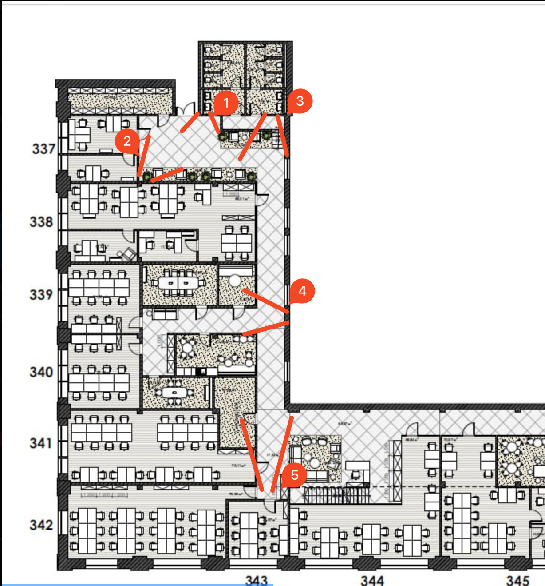

ShadowTrack / Аудит исходных данных
Статус: warning · Создан: 2026-11-06T20:23:45.232731+00:00 · JSON stats
PTS — время медиапотока, а не часы в кадре. Межкамерная синхронизация не подтверждена; поправки времени не применялись. ID людей не размечались.
Проверки и ограничения
- timestamp_gaps — camera_new_1.mkv: 2 intervals exceed 1.5 x median; not proof of dropped frames.
- fps_cadence_mismatch — camera_new_1.mkv: Header FPS [25.0, 25.0]; cadence excluding gaps 25.511502 FPS.
- timestamp_gaps — camera_new_2.mkv: 2 intervals exceed 1.5 x median; not proof of dropped frames.
- timestamp_gaps — camera_new_3.mkv: 2 intervals exceed 1.5 x median; not proof of dropped frames.
- timestamp_gaps — camera_new_4.mkv: 1 intervals exceed 1.5 x median; not proof of dropped frames.
- decoded_start_mismatch — camera_new_5.mkv: Declared video start 0.0s; first decoded frame 5.323s.
- timestamp_gaps — camera_new_5.mkv: 2 intervals exceed 1.5 x median; not proof of dropped frames.
- inconsistent_fps: Across cameras, nominal_fps: [25.0, 25.0, 25.0, 20.0, 25.0]
- inconsistent_fps: Across cameras, header_average_fps: [25.0, 25.0, 25.0, 20.0, 25.0]
- inconsistent_fps: Across cameras, observed_fps: [25.085495993508896, 25.080178853463245, 25.082764199167777, 19.998310119789082, 25.08044021977507]
Frames: число кадров полного декодирования ffprobe. FPS PTS: (N − 1)/(last PTS − first PTS). Duration — контейнер, может включать аудио. Preview распределены по диапазону видеопотока; подписи показывают фактический PTS и время от первого кадра.
Ручные наблюдения сцен, гипотезы перекрытий и исследование часов: DATA_AUDIT.md (при стандартном расположении отчёта).
Визуальное исследование
Авторские наблюдения и гипотезы; привязаны к SHA256 исходных файлов. Не являются калибровкой или разметкой ID.
Часы изображения и PTS расходятся
Камера 1: кадры PTS 225.902 и 235.950 s показывают одинаковое OSD 17:42:28; PTS 723.187 и 733.242 s — одинаковое 17:50:46. Это несовпадение скачка PTS и часов изображения, а не доказанная потеря 10 секунд съёмки. Крупные фрагменты и фактические PTS: artifacts/events/gaps_camera1.
Камеры 1, 2, 3 и 5 имеют по два разрыва PTS около 10 секунд в разные моменты. Камера 4 имеет 20 FPS, остальные заголовки — 25 FPS. Первое декодированное изображение камеры 5 имеет PTS 5.323 s при объявленном начале 0 s. Выравнивание по номеру кадра или только по длительности непригодно.
Событийная проверка синхронизации
Камеры 1 и 3 видят один телевизор. Две смены видеоплана ограничивают разность PTS_camera1 − PTS_camera3 интервалами [0.822; 0.978] s и [0.819; 0.976] s. Это свидетельство локального запаздывания камеры 1 примерно на 0.9 s по PTS в начале записи, без разметки людей или ID. Полные кадры, crops и команды: artifacts/events/tv_refined.
Поздний диапазон 1100–1105 s просмотрен, но не дал однозначной смены плана для точной оценки. Постоянство offset на протяжении ролика не подтверждено. Из-за асинхронных скачков PTS одна постоянная поправка не обоснована. Ни один offset не применён; камеры 2, 4 и 5 этим измерением не синхронизированы.
OSD первых кадров: 17:38:39, 17:38:40, 17:38:40, 17:38:43, 17:38:42. Дата изображения 2026-10-08, часовой пояс неизвестен. Надписи относятся к разным начальным PTS и не являются готовыми межкамерными смещениями.
Камеры 1–2: общая комната
Общие ориентиры — теннисный стол и окружающий пол. Это подтверждённый общий участок 1↔2; точный полигон не построен. Камера 1 также видит общую с камерой 3 стену телевизоров и область настольного футбола. Перекрытие 2↔3 в переходной зоне вероятно, точные границы не проверены.
Камера 1: кандидаты ухода — нижняя и правая границы, область штор. Ноги видны на ближнем открытом полу, но закрываются столом, обрезаются краями и размываются при движении. Камера 2: белая дверь сверху по центру открывается в выборке PTS 1–5 s; стол, стенд и шторы дают окклюзии. Светлую панель рядом с дверью нельзя автоматически считать проходом: возможны отражение или проём.
Камера 3: комната и длинный коридор
Видны дверь 338, настольный футбол и экраны. Зоны ухода — глубина коридора, двери, нижняя и правая границы. Ближние ноги читаются лучше дальних; дверь и стол перекрывают нижнюю часть тела. Люди на телевизорах и отражающая панель могут давать ложные детекции.
Для камер 3 и 5 вероятен встречный обзор длинного коридора; для 3↔4 и 4↔5 вероятна связь через боковой коридорный узел по плану. Непрерывное покрытие и одновременная видимость в этих парах не доказаны.
Камеры 4–5: коридоры и видимость ног
Камера 4: боковой коридор со шторами слева, стеклом справа и поперечным проходом снизу. Кандидаты ухода — оба края поперечного прохода и проём в глубине. На открытом полу ноги видны сравнительно хорошо; группы перекрывают друг друга, нижняя граница обрезает фигуры, стекло даёт отражения.
Камера 5: длинный коридор, дверь 342, кресла и тренажёр. Кандидаты ухода — нижняя граница, двери и дальний конец. Ближние ноги читаются лучше дальних; дверные полотна и мебель дают окклюзии. Доля кадров с видимыми стопами количественно не измерялась.
Metadata, геометрия и граница этапа
Реальная metadata — один растровый план office_camera.png с цифрами 1–5. Метрических координат, масштаба, intrinsics/extrinsics, гомографий и полигонов нет. Имена файлов используются как рабочие обозначения; точная привязка ракурсов к плану не доказана.
Во всех ракурсах заметны широкоугольная перспектива и изгиб прямых линий у краёв. Коэффициенты дисторсии не измерены. Перенос footpoint на план без калибровки ненадёжен. 20 preview на камеру — выборочный аудит, не оценка recall или подсчёт людей.
Прочитаны DOCX ТЗ и PDF из Downloads. Их заявления о синхронности проверены на данных. Детекция, ReID, трекинг и ручные ID не выполнялись. Следующий этап не запущен. Полные выводы, команды, тесты и риски — DATA_AUDIT.md.
Реальные metadata
